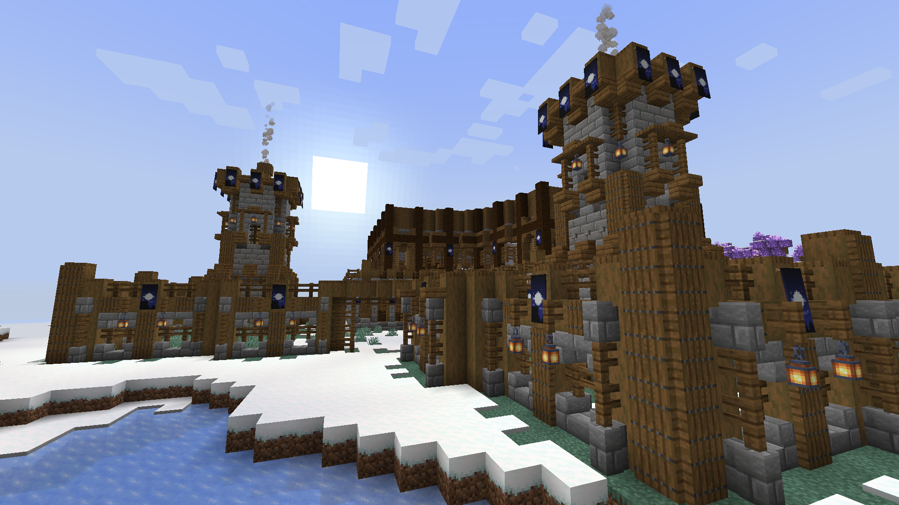

Welcome to our website!
By: Jersey, Klinsmann and James
Image of Jersey's Computer Setup (Jersey's photo).

Throughout the progression of history, several advancements have been made in education and learning to further develop generational knowledge. Specifically, within the sector of Digital Simulations and Serious Gaming.
Initially, the sole purpose of computers was to aid the science, technology, engineering and mathematical industries. Its design revolved around solving complex calculations, which was further developed in order to serve other benefits
Due to the developments made, the computer was able to be of use within the faction of education as well. Ronald M Baeker in his book titled “Computers and Society: Modern Perspectives” states that the use of computers heavily helped in conveying further knowledge to students. It helped to provide online tutorials, practice exercises and extra material in different formats for a student to access at their own discretion.
We have chosen this topic as it sparks our interests, particularly the advancements made in digital simulations and gaming. As previously mentioned, extra material in different formats was made accessible to students due to online learning. These materials could come in the form of different useful sources such as Rstudio, photoshop etc Relating this to the serious gaming aspect, platforms such as Minecraft, the sims and other entertaining resources have also been deemed as useful in education. It piques our interest as we are firm believers that making education fun is also a convenient way to help students in getting motivation to learn.